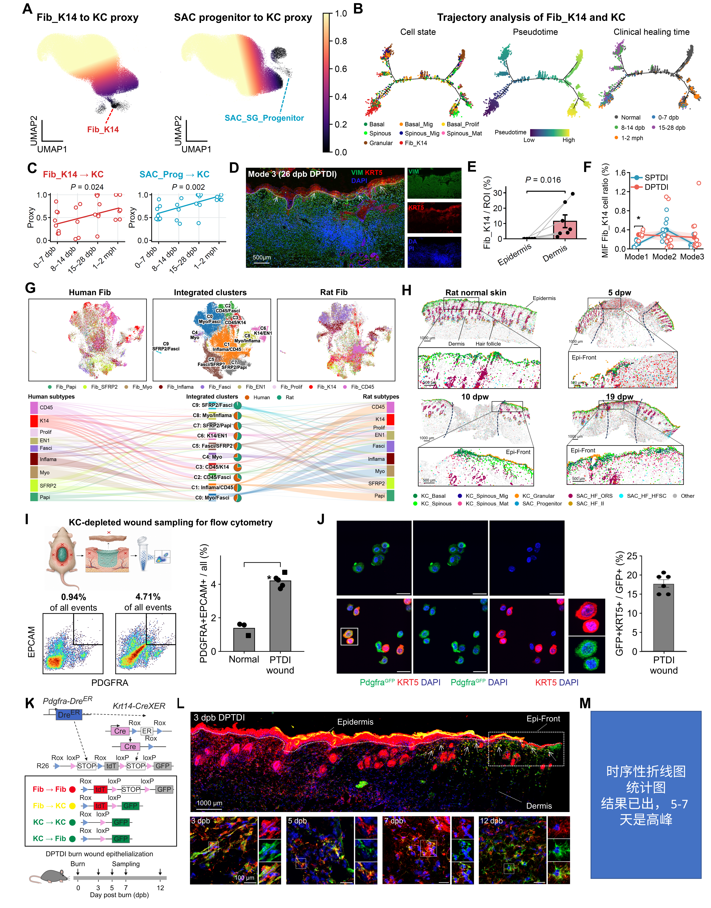

Expression relationships, cross-species support, dermal isolation and mouse dual-recombinase lineage tracing.
Executed supporting analyses and/or archived sources; see panel-specific status
Source data · Panel manifest · Execution report

| Panel | Description | Status |
|---|---|---|
| 3A | (A) Transcriptional proxy scores for Fib_K14-to-KC and SAC_SG_Progenitor-to-KC relationships, projected onto UMAP. | not_run |
| 3B | (B) Reconstructed cell-state trajectory colored by annotated state, pseudotime, and clinical sampling interval. | not_run |
| 3C | (C) Proxy-score comparisons across clinical sampling intervals. The displayed regressions are annotated P = 0.024 for Fib_K14-to-KC and P = 0.002 for SAC_SG_Progenitor-to-KC. | not_run |
| 3D | (D) VIM (green), KRT5 (red), and DAPI (blue) imaging in a human DPTDI wound classified as Mode 3 at 26 days post-burn (dpb). Overview scale bar, 500 μm. | not_run |
| 3E | (E) Paired dermal and epidermal regional measurements of the Fib_K14-associated fraction, labeled as percentage per region of interest (ROI). The comparison is annotated P = 0.016. | not_run |
| 3F | (F) Multiplex-imaging-based Fib_K14-associated fractions across Modes 1–3 for SPTDI and DPTDI. | not_run |
| 3G | (G) Integrated human and rat fibroblast-state embeddings and an alluvial representation of shared clusters. | not_run |
| 3H | (H) Rat spatial epithelial-state maps for normal skin and 5, 10, and 19 days post-wounding (dpw), with magnified wound-front regions. | not_run |
| 3I | (I) Central dermal wound-bed sampling after removal of epidermis and wound-edge tissue, followed by PDGFRA/EPCAM flow cytometry. Representative double-positive gates contain 0.94% of all events in normal tissue and 4.71% in injured tissue; the separate plot summarizes group measurements. | not_run |
| 3J | (J) Cultured Pdgfra-reporter-positive cells stained for KRT5 (red), GFP (green), and DAPI (blue), with the KRT5-positive fraction among GFP-positive cells. | not_run |
| 3K | (K) Dual-recombinase reporter schematic using Pdgfra-DreER and a Krt14-CreXER label as displayed, with rox/lox reporter logic distinguishing tdTomato-only fibroblast-lineage cells (red), tdTomato/GFP double-positive fibroblast-derived epithelial cells (yellow in merged images), and GFP-only keratinocyte-lineage cells (green), and wound sampling at 3, 5, 7, and 12 dpb. | not_run |
| 3L | (L) Dual-recombinase lineage tracing of fibroblast-to-keratinocyte transdifferentiation, including a 3-dpb DPTDI overview and magnified regions at 3, 5, 7, and 12 dpb. Fibroblast-derived epithelial cells carrying tdTomato and GFP are yellow in merged images; tdTomato-only fibroblast-lineage cells are red and GFP-only keratinocyte-lineage cells are green. Overview scale bar, 1,000 μm; inset scale bars, 100 μm. | not_run |
| 3M | (M) Temporal quantification of fibroblast-to-keratinocyte transdifferentiation during wound repair. The time-dependent pattern is consistent with the repair-associated transition inferred from the single-cell analyses. | partial |
The final Figure 3M quantitative source/artwork remains pending in the baseline. Genetic lineage tracing, transcriptional trajectories and marker colocalization are recorded as distinct evidence types.